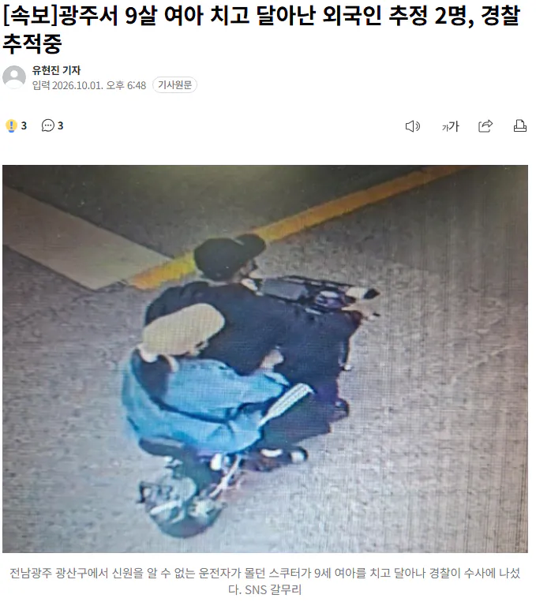
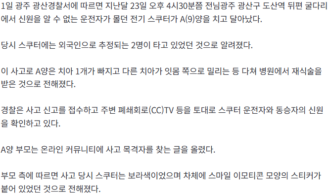

도산동은 외국인이 많이 사는 곳이고 베트남인으로 보인다는 말이 있음
https://n.news.naver.com/mnews/article/021/0002822595?sid=102


도산동은 외국인이 많이 사는 곳이고 베트남인으로 보인다는 말이 있음
https://n.news.naver.com/mnews/article/021/0002822595?sid=102
상국 사람들 ㄷㄷ
ice처럼 싹 잡아놓고 확인해
걔들은 총이라도 있지
한국은 맨몸임
무기 없다
지역수사 제대로 들어가면 한 500명 추방 뜰거같은데 ㅋㅋㅋㅋㅋ
동남 장궤
국내에 ice 하나 팀 꾸려서 다 추방하면 안대나 불체자놈들은 범죄나 저지르고 돈은 해외에 보내는 새끼들인데 왜 싹다 안조지는지 모르겠음
저런 불체자에게 일을 주는 기업이 있으니 들어오는 거일꺼고
그 회사들 줄줄이 문 닫을 꺼 감당 안 되니까 손 못 대는 거겠지
불체자는 내보내고 임금을 올려서 한국인들이나 합법외국인을 고용해야지 그렇게 못하면 문을 쳐 닫게 해야함.
한국에서는 출입국관리직 공무원이 단속 책임을 맡고 있다
불체자는 40만 명에 육박한다
불체자들이 순순히 귀국한다면 다행이지만 무기 들고 반항하는 놈들 꼭 있다
그때 어떻게 해야 하느냐? 도망뿐임
무기 사용할 수 있다고는 지침에 나와 있긴 한데 불체자들이 다치는 순간 내부감사에서 꼬리 자르기 하고, 고용주고 언론이고 인권위고 정치인이고 다 지랄한다
자국 공무원 신변보다 불체자 안전, 인권이 우선이다
참깨가 막 쇠뭉둥이 들고 설쳐서 해경 다친다는 소리 들어봤지? 걔들도 비슷한 상황임
적극행정? 좆 까! 경찰처럼 무기 쓸 수 있기라도 하고 그 소리 하자
불필요한 인권타령과 저임금으로 쓸수 있는 좆소기업의 콜라보 아닐까?
불체자면 바로 추방했으면 좋겠다
광산구 도산역이면 강건너 평동 공장단지들 나오는데, 거기 주변에 베트남인들 많이 살고있음. 좀 더 올라가서 월곡동쪽으로 가면 고려인 마을 나오고.
월곡시장 뒤에도 베트남, 짱1ㄲ 많이 삼ㅋㅋ 동남아? 음식가게 좆나 많음
우즈벡인들도 많이 살지. 거기 음식집들 꽤 괜찮은 곳 많은데 어흐
근처 사는데 추천좀
가족카페 안쪽으로 더 들어가면 우즈벡촌 나오는데 거기 근처에 있는 하얀색간판 쌈사가게가 맛있음
충청도 소도시 사는데 집근처 원인 불명 중앙아시아식당 가봤는데 너무짜고 맛없고 비쌌음. 타지키스탄인지 키르기스스탄인지 고려인처럼 생긴손님도 있고 정체성이 진짜 특이하더라
보통 한국사람들 자주 안가는 곳들은 우리가 먹기에 좀 미묘한 게 많기도 함 ㅋㅋ 확실히 기름지고 짜. 근데 원래 고기는 지방이 많아야하고, 샐러드엔 올리브유가 잔뜩 들어가야 맛있는걸..
충남쪽 인구10만짜리 소도시인데 여기 외국인들 한 2만명 있는거같다 ㄹㅇ
코리안ice 창설
요즘 베트남, 대만인 들이 이슈가 많네
일본에서도 난리임
사람모양 벌레는 사고사 좀 시켜라
전기스쿠터 타고 다니는 외국인 대부분 베트남 사람이던데
베트남 씨발새끼들
착장이 베트남이네
가게 이름 마음에 안든다고 부셔버리고 도주한 외국인들은 처벌했겠죠?
베트남 개씨발새끼들
별 미친새끼가 다있네
씨발것들이네
안봐도 똥트남인듯
불체자 전부 추방하자..
진짜 외노자나 불체자 관리 좀 해라
저거 다른 사진은 여자 얼굴 다 찍혔는데 못잡는건 말이 안되지
우리동네 외국인들은 그랜저타고 다니는데
좆됐네 그게 젤 무섭다
슬슬 외국인들 범죄 일어나네 ㅋㅋㅋㅋ
에휴. 경찰, 검찰 공무원 많이 늘리는게 좋지않나. 없애기보다는
사람 치면 어떻게든 잡는데 뉴스까지 떳으면 이미 잡혔을듯
근데 불체자면 인식 좇박았을때 가장 위험한 놈들 아님? 오히려 불체자 타겟범죄 사례도 있지않나
쟤들은 뭔 생각으로 저런짓하냐
일단 오도방구면 높은 확률로 베트콩일듯
ㅅㅂ2년전에 자전거 타다 옆구리 습격한 응우옌 반 남 십새끼 아직도 기억나네
출국 했겠네 ㅋㅋ
설마 나라에서 극진하게 모시려 하는 그 나라 분들인가